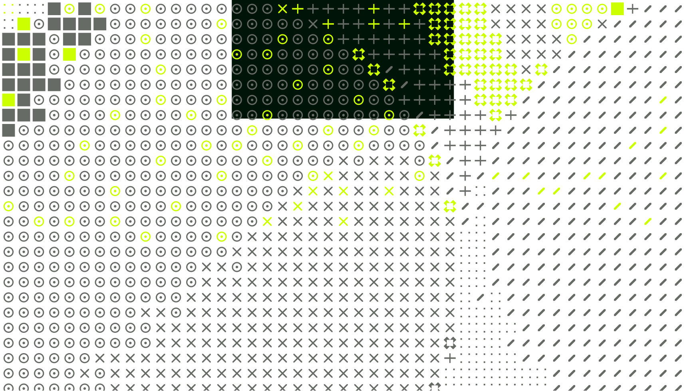
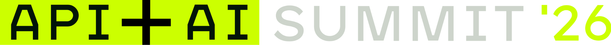
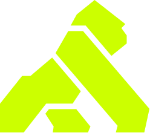
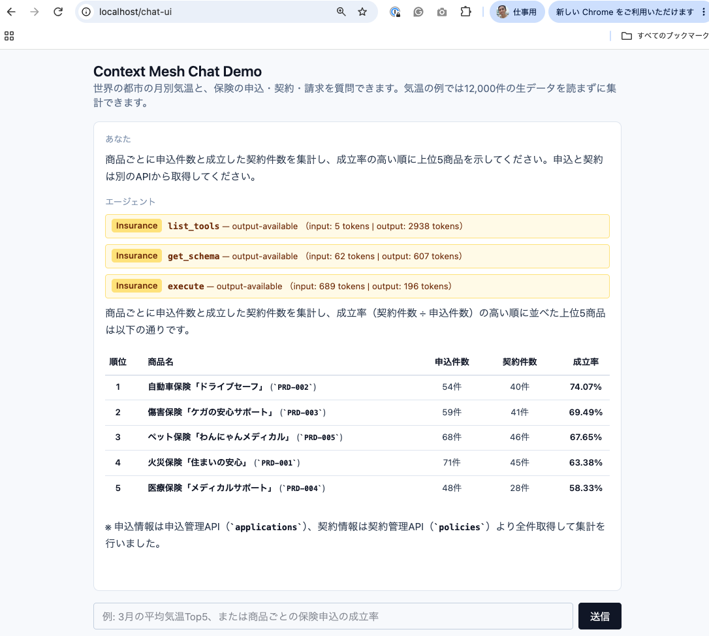

Ned Shawa
肩書・紹介文は後続反映


Ned Shawa / Shinichi Hashitani
Kong · 2026.11.19

DRAFT 02肩書・紹介文は後続反映
肩書・紹介文は後続反映
プロジェクトごとの接続を、企業全体で使える共通の接続へ。
01
安全に使い、コストを理解する。
AI COST MANAGEMENT
01 / OBSERVE
チーム・アプリケーション・
エージェントに結びつける。
02 / PLAN
利用の実績を、
業務の予算と照らし合わせる。
03 / ACT
増加の理由を理解し、
運用の判断につなげる。
AFTER THE DEMO / AI COST MANAGEMENT
デモで見た価値は、利用情報を集め、組織の単位で見て、費用のルールを決められること。
01 / COLLECT
モデルをまたぐ利用・コスト情報を集約。
02 / SEE
個人・チームの利用単位を定義し、状況を把握。
03 / ALLOCATE
プライスリストを定義し、費用の配賦に使う。
柔軟なチャージバック
本部が一部を負担し、残りをチームへ
自社運用モデルにも価格を設定し、公開モデルと同じように配賦
Kong AI Cost Management · Cost Analytics · チャージバック例は運用設計のイメージ
02
エージェントが必要な情報に、届くために。
CONTEXT MESH
01 / CONNECT
複数のAPIやMCP Serverを、
エージェントが使う
共通の入口に。
02 / COMPOSE
複数APIの呼び出しと加工を
Code Mode MCPで
集約処理。
03 / RETURN
中間データの往復を抑え、
エージェントに渡す
コンテキストを整える。
AFTER THE DEMO / INSURANCE
デモの質問 I-1
商品ごとの申込・契約を集計し、
成立率の高い順に上位5商品を。
商品IDでまとめ、
契約件数 ÷ 申込件数を計算。
74.07%
自動車保険：40契約 / 54申込
提供キャプチャの実行例。
架空の保険データによるデモ。

AFTER THE DEMO / CONTEXT MESH
Kong Context Mesh Docs · 保険デモ I-1 · 取得件数は提供例
CONTEXT MESH / HOW IT WORKS
CONTEXT / TAKEAWAY
何にアクセスできるか？
どこで処理するか？
何をエージェントへ返すか？
03
個々の接続から、組織の基盤へ。
THE AI CONNECTIVITY COMPANY
AGENT ↔ LLM
モデルを利用する際の
ガードレールと
コスト管理。
AGENT ↔ AGENT
複数のエージェントが
連携する世界も、
全体像に含める。
AGENT ↔ API
必要な情報を探し、
処理し、使える形で
エージェントへ届ける。
接続先が増えても、制御と運用を個々の実装に閉じ込めない。
AI AGENTS × CONNECTIVITY
いまのAIエージェントに、
足りない接続は何ですか。
モデル。エージェント。APIとコンテキスト。
その全体を、AI Connectivityとして考える。
現在のページと停止状態を保持しています。